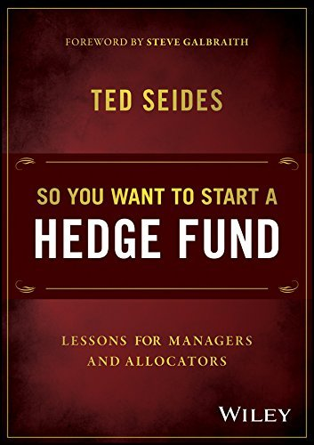

泰德·塞德斯（Ted Seides）是耶鲁大学捐赠基金的培养产物，曾在大卫·斯文森（David Swensen）麾下工作，后创立并管理对冲基金组合投资机构Protege Partners长达十年。他最为人知晓的，是2007年与沃伦·巴菲特打下的那个著名赌局——赌注是标准普尔500指数在十年内是否能跑赢精选对冲基金组合，结果巴菲特大获全胜。《所以你想开一家对冲基金》出版于2016年，是塞德斯在多年投资经历与对冲基金生态观察基础上写就的一本罕见的"内部视角"著作，对冲基金行业的神秘感往往源于信息的极度不对称，而本书的价值正在于以坦诚的态度拆解了这一不对称。
本书同时面向两类读者：有意创立对冲基金的新兴管理人，以及代表机构客户配置资产的专业投资者（Allocator）。对于前者，塞德斯详细描述了一只新基金从零到一的现实路径——从如何建立早期投资者关系、如何定价策略并向机构投资者讲清楚自己的优势，到如何在资产管理规模尚小时维持运营的可持续性。他毫不讳言地指出，许多新兴管理人失败的原因不是投资能力不足，而是对"经营一家资产管理公司"所涉及的商业逻辑准备不足。
对于配置者而言，本书提供了一套评估对冲基金的实用框架。塞德斯从自身经历出发，分析了机构投资者在尽职调查过程中常见的认知误区：过度依赖历史业绩、低估投资策略与市场环境之间的适配性问题、忽视管理人的激励结构对长期行为的影响。他尤其强调"边际资金"的影响——一只在管理一亿美元时表现出色的基金，在规模增长至二十亿美元后可能因为策略容量耗尽而业绩稀释，这是对冲基金行业中普遍存在却经常被投资者忽略的结构性问题。
索罗斯基金管理公司前首席投资官斯科特·贝森特（Scott Bessent）评价本书是"配置者、行业老将、有志管理人以及普通投资者的必读之作"（a must read for allocators, industry veterans, aspiring managers, and everyday investors）。这本书的独特之处在于，它既不是对对冲基金的浪漫化叙述，也不是简单的批判——而是一份来自行业内部的清醒报告。对于任何希望理解对冲基金行业真实运作逻辑的读者，无论其最终是否打算参与这个行业，本书都提供了难以从其他渠道获得的第一手视角。